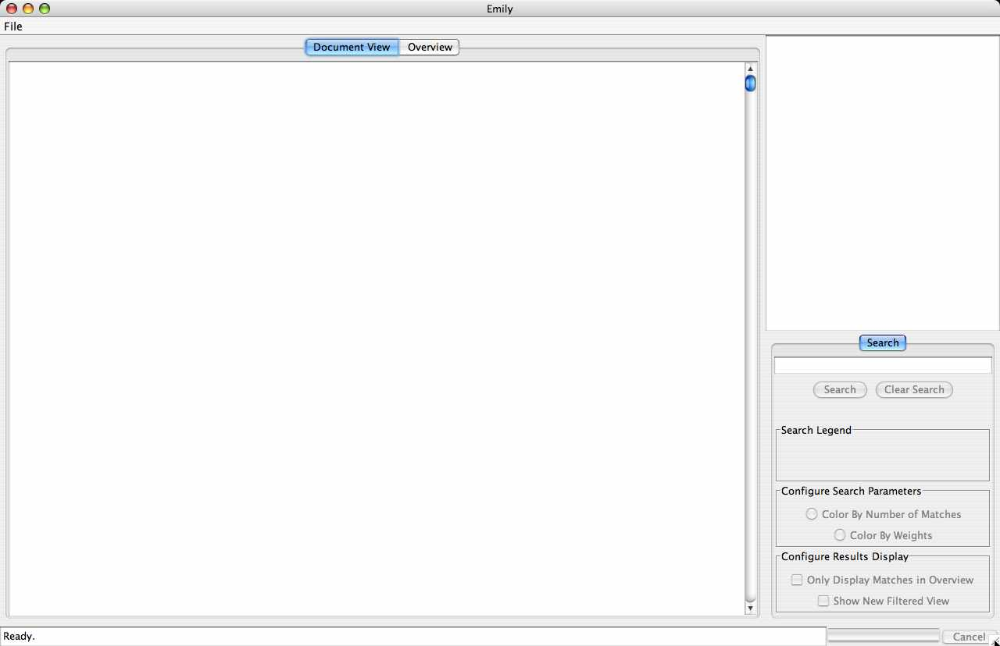
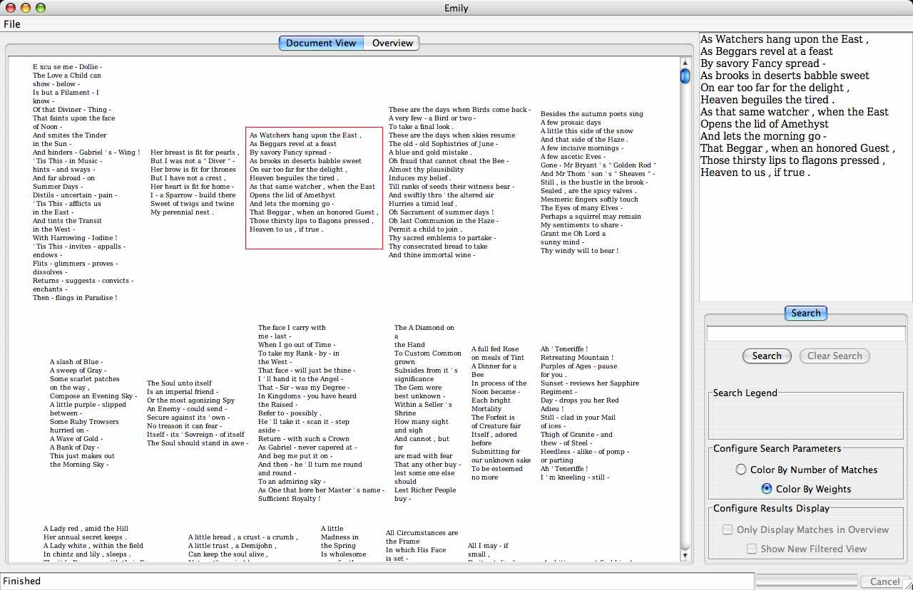
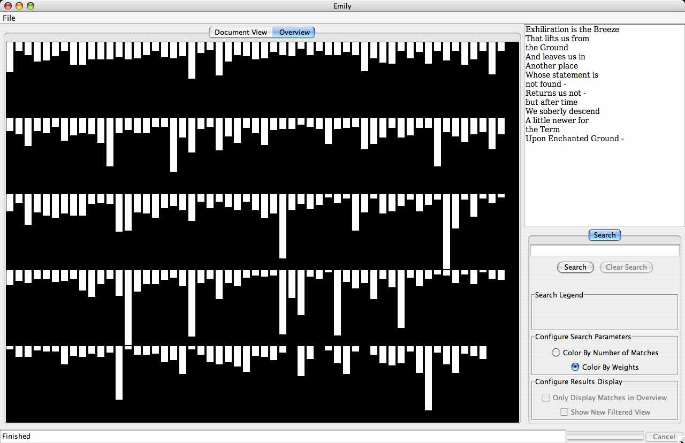
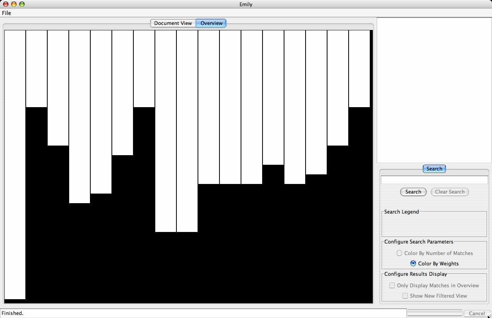
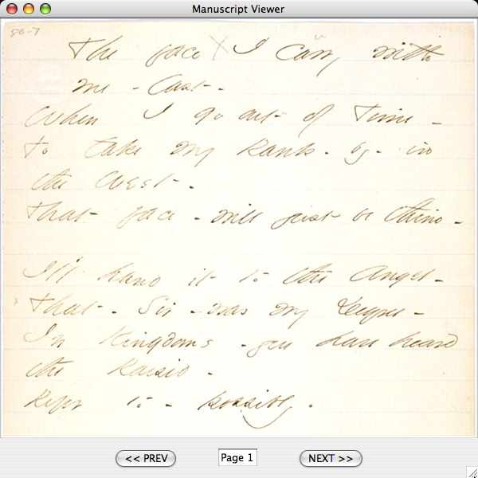
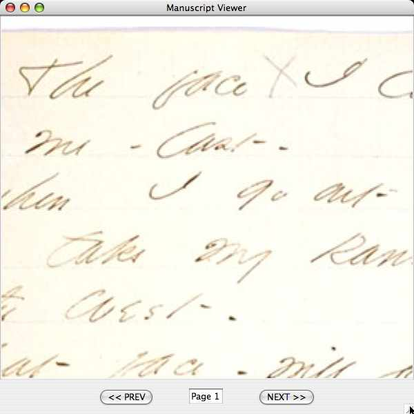
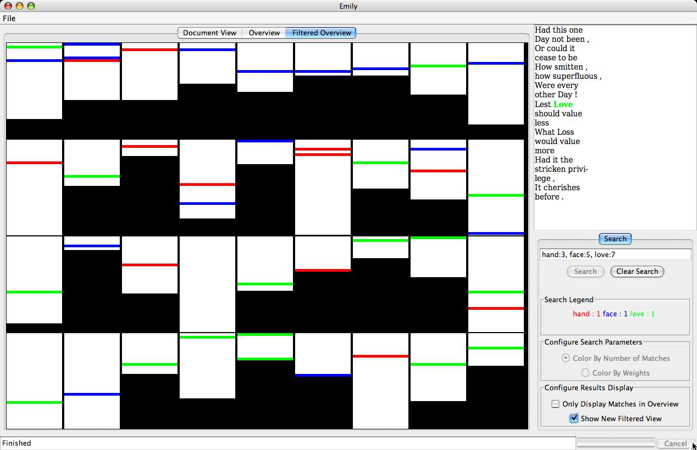
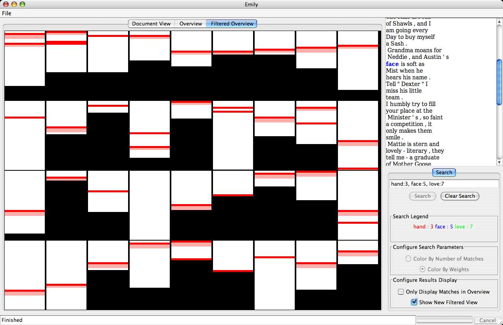

CMSC 838S, Information Visualization, Spring 2005
Emily: A Tool for Visual Poetry Analysis
Nitin Madnani, nmadnani@umiacs.umd.edu
This general goal of this effort is not only to conceive and implement a tool suitable to the visualization of free-flowing natural language text, such as poetry, but also to empower the user to analyze such text, without ever leaving this visualization tool.
To perform such analyses, the precise needs that this tool seeks to fill are:
- Perform various forms of searches on multiple poems at the same time.
- Visualize the search results, in various ways, in real time.
Report : pdf (958 K)
Download: zip
Abstract
Information visualization has not been very successful in pervading areas of literary and scholarly enquiry, such as the analysis of relatively unstructured human-generated text like poetry. The work presented here proposes the use of visualization tools for such scholarly analysis and details the operation of a tool developed for this purpose.
Screenshots:
Click to see hi-res version.







